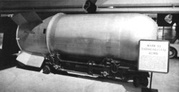
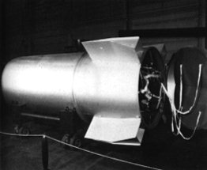
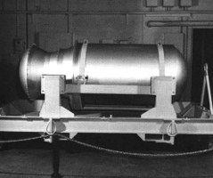

Last updated 3 April 1997  
The Mk/B-53 is the oldest and highest yield nuclear weapon in the U.S. arsenal. It is currently being removed from service as it is replaced by the B61-11.
| Yield | 9 Megatons |
|---|---|
| Weight | 8850 lb |
| Length | 12 ft. 6 in (150 in) |
| Diameter | 50 in |
| Number In Service | About 50 |
Two stage radiation implosion weapon
Basic warhead design the same as in the W-53 warhead deployed on the Titan-II ICBM (now out of service).
Rear portion of bomb consists of parachute system, weighing 800-900 lb. The nose is made of a frangible aluminum honeycomb "shock absorber" for laydown delivery and weighs more than 150 lb.
Characteristics of the W-53, and the Hardtack Phase I test devices, indicate that the actual warhead "physics package" is no more than 102 inches long by 36.52 inches in diameter, with a weight of ~6000 lb. The skin on the 50 inch in diameter bomb is described as "fragile", consistent with it being only a light weight structure housing a smaller diameter weapon. The added length comes primarily from the B-53 parachute system and frangible nose, the excess weight from these and the dummy body.
Although there is only one reported yield for this weapon, the two variants produced - the "dirty" Y1 and the "clean" Y2 - suggest that two different yields may exist.
Fissile material is all-oralloy (highly enriched uranium), no plutonium
Lithium-6 (95% enrichment) deuteride fusion fuel
Cyclotol or Composition B high explosive (castable RDX/TNT mixtures), not insensitive
The B53-Y1 is a "dirty" version (with a U-238 encased secondary). The B53-Y2 is a "clean" version, perhaps with a lead or tungsten secondary casing.
B-52G strategic bomber (internal bomb bay)
Originally lacked modern arming and safing features, but has been given a life extension upgrade. Probably uses mechanical lock on firing system.
Selected on ground prior to mission.
Four fuzing options:
Five parachutes are used:
Designed and developed by Los Alamos Scientific Laboratory (LASL). The Mk-53 apparently can trace a design lineage back to the very first solid-fuel radiation implosion device ever tested, the Shrimp detonated in the Castle Bravo test. The Shrimp design was weaponized into the lighter and more compact Mk-21. Later, an even smaller and lighter high yield weapon designated the Mk-46 was developed from the Mk-21. After a test failure in Operation Hardtack I, the TX-46 secondary was redesigned and generated a high yield on a retest. This revised design was assigned the designation TX-53, and developed into a deployed weapon. Although opportunity to test the production version of the Mk-53 existed during Dominic I and II, it appears that the only test of the Mk-53 design at full yield was the Hardtack I retest, before the TX/Mk-53 designation had even been assigned.
Current models are the B53-Y1 and the B53-Y2, which are "dirty" and "clean" versions. The last 50 B-53 bombs finally began retirement from active service at the beginning of 1997 (although they remain part of the enduring stockpile). The role assigned to the B-53, destroying buried command centers, is being taken over by the B61-11 ground penetrating warhead.
| 1955 | |
|---|---|
| November | DOD requests AEC to prepare a feasibility study on a "Class C" warhead (megaton range, <10,000 lb, 40 in wide or less) |
| 1956 | |
| September | LASL assigned responsibility for a new "Class C" warhead. |
| 1957 | |
| June | DOD authorizes development of a "Class C" weapon designated the Mk-46 |
| 1958 | |
| March | Ordnance characteristics of the Mk-46 design released. Strategic Air Command issues request for "Class C" full fuzing option aerial bomb to succeed the Mk 41 |
| Summer | Developmental tests of the new "Class C" weapon fired in Operation Hardtack Phase I at Enewetok: 11 May 18:15 (GMT) Butternut - test of Mk-46 primary and radiation implosion system, 6185 lb device (347 lb primary), yield 81 Kt (105 Kt predicted) 26 May 02:00 (GMT) Yellowwood - test of full Mk-46 thermonuclear system, 5885 lb device, the second stage fizzled producing a total yield of only 330 Kt 28 June 19:30 (GMT) Oak - retest of redesigned full thermonuclear system. Device description: 6113 lb overall, 346 lb primary, 37 in diameter, 100 in long. Yield 8.9 Mt (5 Mt fission). Apparently the only full yield test of the basic design ever conducted. |
| October | LASL and Sandia submit proposed schedule and warhead characteristics |
| December | AEC direct LASL and Sandia to proceed with "Class C" weapon development |
| 1959 | |
| Early 1959 | Warhead assigned new TX-53 designation |
| 1960 | |
| July | Production engineering on Mk-53 begun |
| 1961 | |
| February | Engineering release for Mk-53 |
| 1962 | |
| August | Release of Mk-53 design (10 August), first production units |
| 1964 | B53-Y2 begins production |
| 1965 | |
| June | Production of Mk-53 halts |
Initial manufacture August 1962
Initial deployment 1962
Approximately 340 B-53 bombs were manufactured between August 1962 and June
1965 at the AEC's Burlington , Iowa final assembly plant.
Retirement of the initial model began in July 1967
In the mid-80s plans were made to retire and dismantle the B-53 and replace it with the B-83. On 5 August 1987, with 25 remaining in service, it was decided to halt retirement, and return to service another 25 that had been retired but not dismantled (the only time this has happened in the U.S.). The stated reason for this decision was to retain the ability to destroy deeply buried hard targets.
In the late 80s a life extension program for the B-53 was begun, which included upgrades to the safing equipment.
The new earth-penetrating B-61 modification, the Mod 11, began entering service in January 1997 and is replacing the B-53 in active service. Under current plans the B-53 will be retained indefinitely as part of the hedge stockpile.
65 W-53s originally deployed, now withdrawn and dismantled
The W-53, sister warhead to the B-53